Хто такий Full Stack Developer?
Full Stack Developer (розробник повного циклу) — це спеціаліст, який вміє працювати як з тією частиною програми, яку бачить користувач (Front End), так і з внутрішньою частиною, яка працює «за лаштунками» (Back End).
Front End (зовнішня частина)
Це те, що ми бачимо на сайті чи в додатку — кнопки, пошуковий рядок, зображення, меню тощо. Наприклад, якщо ти заходиш у Google, пошуковий рядок і кнопки — це частина Front End.
Back End (внутрішня частина)
Це те, що працює за кулісами. Наприклад, коли ти натискаєш на кнопку пошуку в Google, система обробляє твій запит і знаходить потрібну інформацію. Це робить саме Back End.
Веб-розробники, які займаються обома цими частинами, називаються Full Stack Developers.
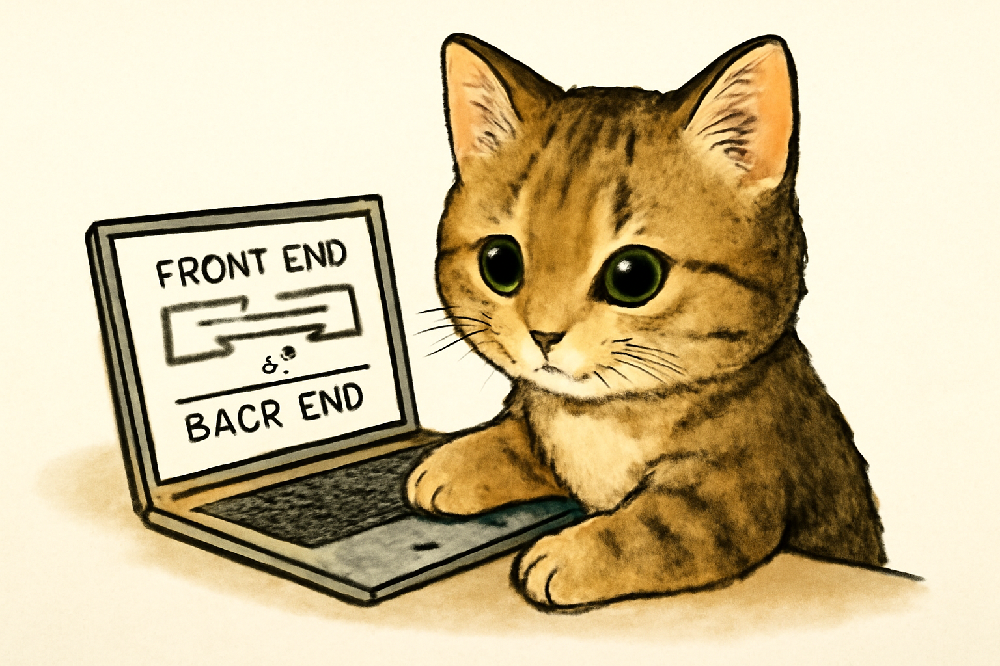Чим займається Full Stack Developer?
🔹 Робота з CMS (системи управління контентом).
🔹 Налагодження вже існуючих сайтів чи додатків або створення нових.
🔹 Співпраця з дизайнерами та командою маркетингу для покращення дизайну та функціональності.
🔹 Налаштування API — це спеціальні інтерфейси для взаємодії між різними частинами системи.
🔹 Full Stack Developer часто «гасить пожежі» на різних етапах проєкту, вирішуючи проблеми на Front End чи Back End.
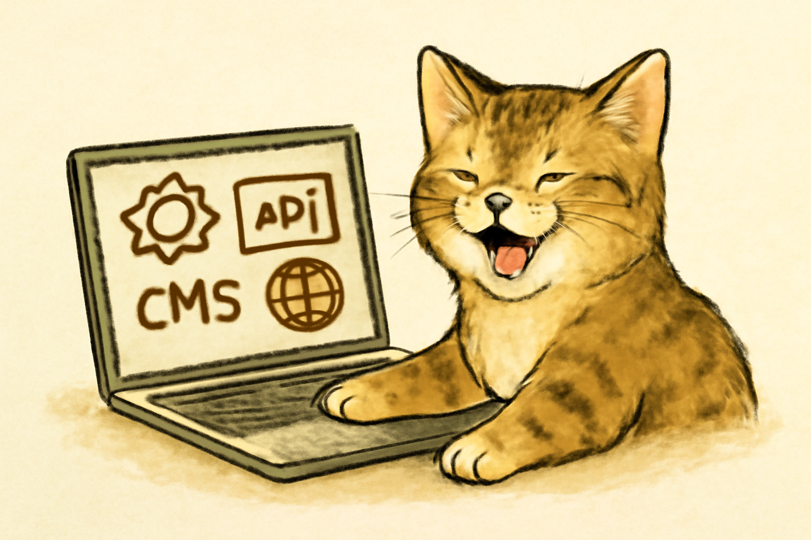Які навички потрібні Full Stack Developer?
Hard Skills (технічні навички)
🔹 Git та GitHub — для роботи в команді.
🔹 Основи HTML та CSS — для створення сайту.
🔹 JavaScript — для створення функціональних елементів на сайті.
🔹 Основи роботи з серверами та базами даних (Back End).
🔹 Основи тестування коду, щоб він працював правильно.
Soft Skills (м'які навички)
🔹 Уміння працювати в команді — важливо взаємодіяти з дизайнерами та маркетологами.
🔹 Творчість — допомагає робити проєкти не тільки корисними, а й цікавими для користувачів.
🔹 Увага до деталей — важливо, щоб усе працювало правильно.
🔹 Терпіння — створення проєкту займає час.
🔹 Гарний тайм-менеджмент — щоб все встигнути та не втомитися.
Тепер ти знаєш, що робить Full Stack Developer і які навички йому потрібні. Ці знання будуть корисні для твоїх перших кроків у веб-розробці!
Перевір свої знання!
1. Що робить Full Stack Developer?
2. Що таке Front End?
3. Які з навичок є важливими для Full Stack Developer?
🌐 Що таке HTML (і з чого взагалі робиться сайт?)
Ти користуєшся інтернетом щодня — дивишся відео, шукаєш щось у Google, граєш в онлайн-ігри… Але чи знаєш ти, з чого "зліплений" сайт?
🚧 Уяви, що сайт — це людина:
🔹 HTML — це скелет, який підтримує всю структуру тіла 🦴
🔹 CSS — це шкіра і зовнішній вигляд, який надає вигляду і стилю 🌟
🔹 JavaScript — це нервова система, яка дозволяє організму реагувати та взаємодіяти з навколишнім середовищем 🧠

Ці три технології — HTML, CSS і JavaScript — завжди працюють разом, щоб створити сучасні сайти.
🧩 HTML — головна структура сайту
HTML розшифровується як HyperText Markup Language. Але не лякайся цієї довгої назви. Головне знати: HTML — це не мова програмування. Це мова розмітки.
Що це означає?
HTML допомагає браузеру зрозуміти, що саме розміщено на сторінці:
🔹 текст ✏️
🔹 картинки 🖼️
🔹 заголовки 📢
🔹 кнопки 🔘
🔹 посилання 🔗
🔹 відео 📹
Тобто, HTML створює "скелет" сторінки, на якому потім усе інше тримається.
🎨 CSS — це стиль і краса
CSS розшифровується як Cascading Style Sheets.
HTML робить сайт "голим" — просто текст, картинки, кнопки, все сіро й сумно. А CSS додає барви, шрифти, анімації, позиціонування і все, що робить сторінку гарною!
🤖 JavaScript — це магія та рух
JavaScript — це справжня мова програмування. Вона потрібна, щоб сторінка реагувала на тебе, користувача.
Завдяки JavaScript сайт може:
🔹 показати повідомлення, коли натискаєш кнопку ✅
🔹 змінювати щось без перезавантаження сторінки 🔁
🔹 робити форми, ігри, калькулятори, інтерактивні карти 🗺️🎲📋
Без JavaScript сайт як картина — гарна, але не рухається. А з ним — живий і кмітливий.
🚗 Сайт як автомобіль
Ти, можливо, не знаєш, як працює мотор, але можеш сісти в авто і поїхати. Так само й з сайтом: користувач бачить лише "зовнішнє", але ти будеш розробником, який знає, що всередині — під капотом. 🧠🔧
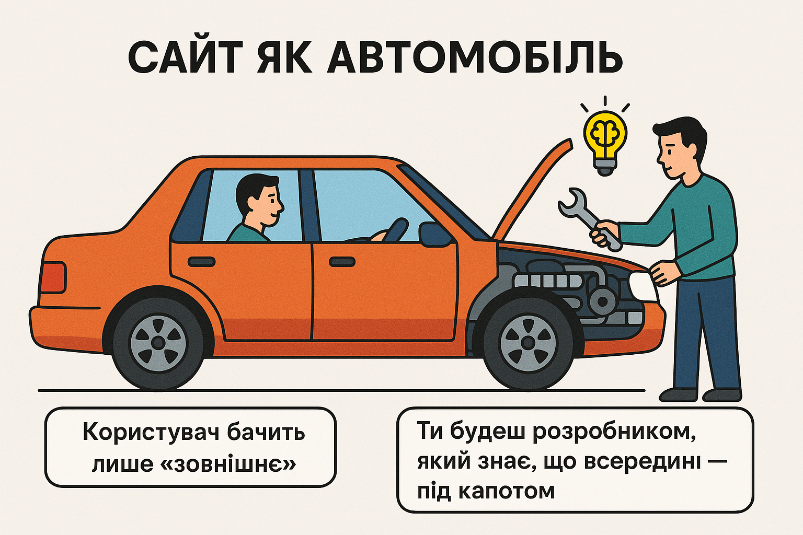Перевір свої знання про веб-технології!
1. Що таке HTML?
2. Яку роль виконує CSS на сайті?
3. Для чого використовується JavaScript?
Знайомство із VS Code
Що таке VS Code і навіщо він потрібен?
Щоб писати код, програмістам потрібен спеціальний інструмент — редактор коду. Протягом курсу ми будемо працювати з найпопулярнішим таким інструментом — Visual Studio Code (VS Code).
Чому саме VS Code?
🔹 Visual Studio Code — це безкоштовний, потужний і гнучкий редактор коду, який працює на Windows, macOS і Linux.
🔹 Він підтримує десятки мов програмування — від HTML та JavaScript до Python, Java, C++ та інших.
🔹 У нього є величезна кількість розширень, які роблять роботу приємнішою: автоматичне форматування, підказки, підсвітка синтаксису, автозбереження, перевірка помилок — і це лише початок.
VS Code — це редактор, який використовують і новачки, і досвідчені розробники у справжніх компаніях. Тому ти одразу вчитимешся працювати в реальному середовищі.
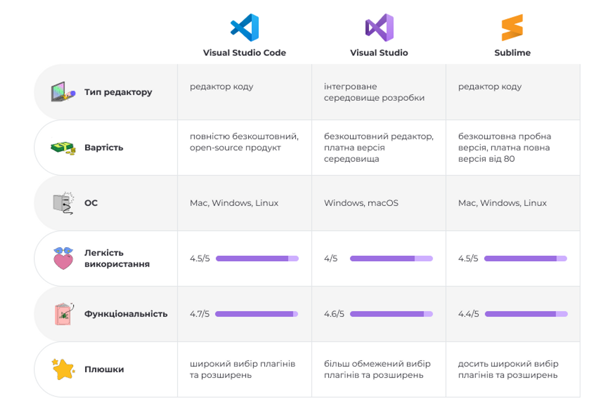Як почати роботу?
1. Завантаження
🔗 Перейди за посиланням code.visualstudio.com і встанови VS Code на свій комп'ютер.
2. Підготовка робочого простору
🔹 📁 Створи на комп'ютері папку Projects. Тут будеш зберігати всі майбутні проєкти.
🔹 🖱 Двічі клікни на іконку VS Code, щоб відкрити редактор.
🔹 📂 Клікни на вкладку Провідник (іконка з двома сторінками) → Open Folder → обери/створи папку для нового проєкту.
При створенні папок і файлів використовуй англійські малі букви, слова розділяй дефісами: vscode-basics, my-first-project.
Основні елементи інтерфейсу VS Code
На старті важливо розібратися з головними частинами VS Code — вони будуть поруч із тобою на всіх етапах роботи:
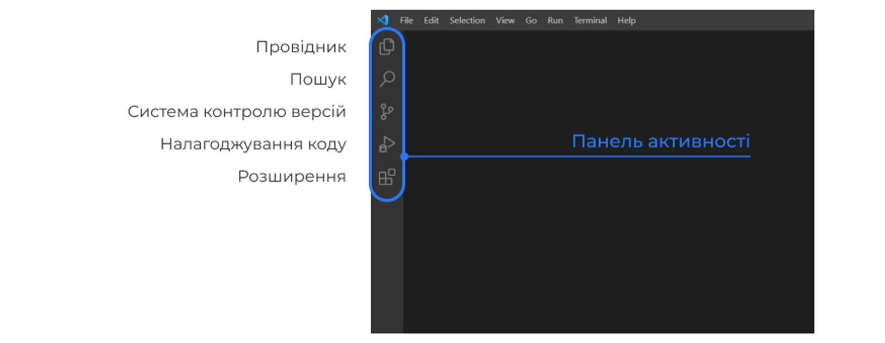
🔹 Провідник (Explorer)
Твоє "гніздо" — тут видно всі файли та папки проєкту. Саме з
Провідника все починається.
🔹 Пошук (Search)
Миттєво знаходь потрібні слова, імена змінних чи частини коду —
навіть у великих проєктах.
🔹 Контроль версій (Source Control)
VS Code вміє працювати з Git — системою, що допомагає зберігати
історію змін. Трохи згодом ти дізнаєшся, як це спрощує життя
програмістам.
🔹 Налагодження (Run and Debug)
Інструменти для виявлення і виправлення помилок у коді. Вони
покажуть, що не так, і допоможуть це виправити.
🔹 Розширення (Extensions)
Магазин «плюшок» для твого редактора. Встановлюй додаткові функції —
від автозаповнення до інтеграції з іншими програмами.
Створення першого проєкту
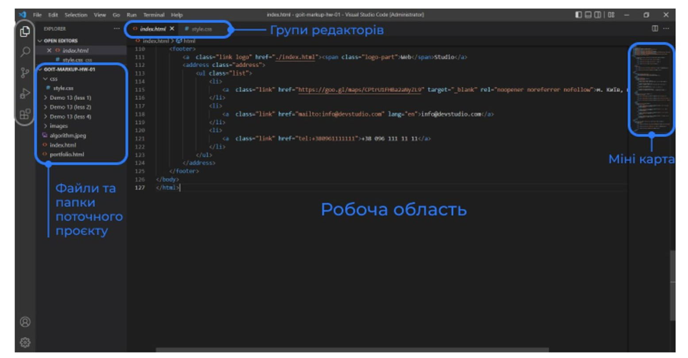Крок 1. Створи нову папку проєкту
🔹 Створи нову папку проєкту та назви її "Projects"
🔹 Створи всередині нову папку з назвою проєкту, наприклад my-first-project
Крок 2. Додай перші файли
🔹 У Провіднику натисни на іконку зі сторінкою → введи index.html → Enter.
🔹 Створи нову папку css → правою кнопкою миші на папці → New File → введи styles.css → Enter.
🎉 Вітаємо! Тепер ти:
🔹 Встановив VS Code і підготував робоче середовище
🔹 Ознайомився з основними інструментами редактора
🔹 Створив перший проєкт та файли
🔔 Порада: чим краще ти налаштуєш робоче середовище на початку, тим зручніше буде працювати над кожним наступним завданням. Не поспішай — якісний старт економить час у майбутньому!
Перевір свої знання!
1. Яка основна перевага Visual Studio Code?
2. Що таке "Провідник" (Explorer) в VS Code?
3. Як правильно називати файли та папки в проекті?
🔧 Налаштування VS Code
Тепер, коли в редакторі з'явилися перші рядки коду, важливо, щоб твій інструмент був зручним. VS Code дозволяє налаштувати практично все під твої потреби. Давай зробимо так, щоб робота була максимально комфортною!
🔎 Як відкрити панель налаштувань?
🔹 Клікни на іконку шестерні в нижньому лівому куті екрана.
🔹 Вибери Settings.
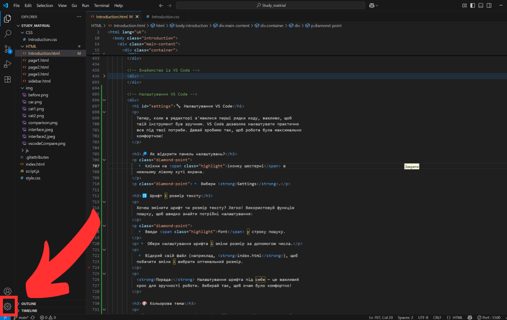Корисно! Використовуй функції пошуку по ключовому слову для внесення потрібних налаштувань у VS Code.
🔠 Шрифт і розмір тексту
Хочеш змінити шрифт чи розмір тексту? Легко! Використовуй функцію пошуку, щоб швидко знайти потрібні налаштування:
🔹 Введи font у строку пошуку.
🔹 Обери налаштування шрифта і зміни розмір за допомогою числа.
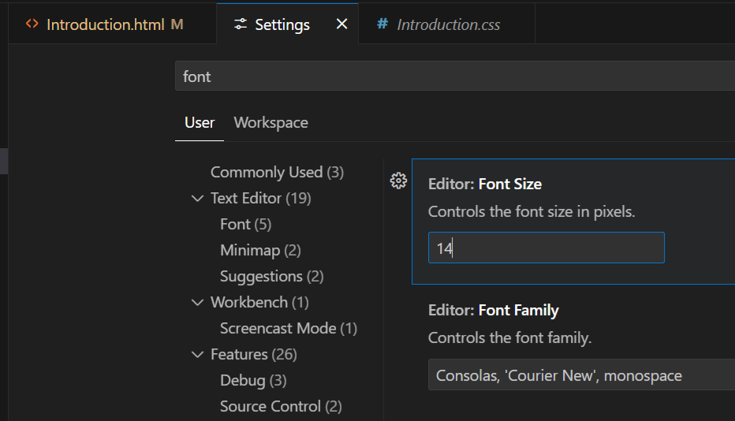🔹 Відкрий свій файл (наприклад, index.html), щоб побачити зміни і вибрати оптимальний розмір.
Порада: Налаштування шрифта під себе — це важливий крок для зручності роботи. Вибирай так, щоб очам було комфортно!
📝 Перенос рядків
Коли в коді багато тексту, деякі рядки можуть виходити за межі видимості, що ускладнює читання. Для зручності увімкнемо перенос рядків:
🔹 У головному меню вибери View.
🔹 У випадаючому меню натисни Word Wrap.
Тепер рядки будуть автоматично переноситися залежно від ширини вікна редактора.
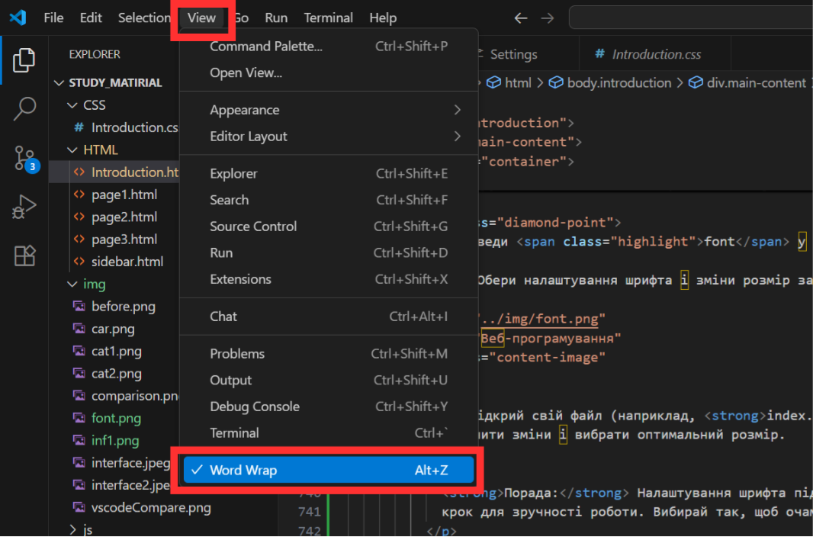💾 Автоматичне збереження
Щоб ще більше спростити роботу з кодом, можна налаштувати автоматичне збереження. Тепер тобі не потрібно вручну зберігати файл після кожної зміни — редактор зробить це за тебе!
Як налаштувати автоматичне збереження
🔹 Відкрий панель налаштувань Settings.
🔹 У строку пошуку введи autosave.
🔹 Знайди налаштування Auto Save і обери зі списку варіант onFocusChange.
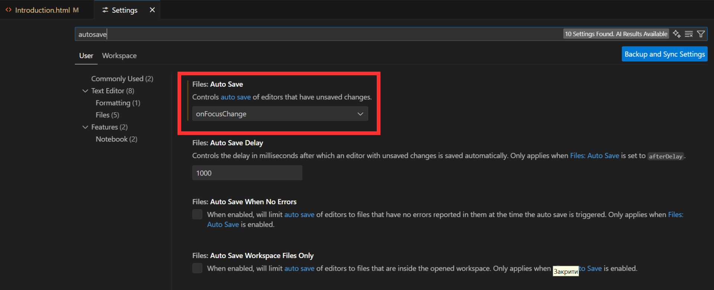Що таке onFocusChange?
З цим налаштуванням зміни в активному файлі будуть зберігатися автоматично, коли ти:
🔹 Клікнеш за межі вкладки.
🔹 Перемкнешся на іншу вкладку.
🔹 Перемістишся в інше вікно.
Увага: Це налаштування зберігає зміни автоматично лише при втраті фокусу. Це означає, що якщо ти залишиш вкладку або переключишся на інший файл, зміни будуть збережені без твоїх додаткових дій.
🎉 Підсумок
Вітаю, твій редактор тепер налаштований під тебе!
Зручний інтерфейс — це важливий крок до ефективної роботи. Встановивши потрібні налаштування, ти значно полегшиш собі навчання й роботу в VS Code! Автоматичне збереження і зручний шрифт зроблять процес роботи ще приємнішим і ефективнішим.
Перевір свої знання про налаштування VS Code!
1. Як відкрити панель налаштувань у VS Code?
2. Що потрібно зробити для увімкнення автоматичного збереження в VS Code?
3. Як увімкнути перенесення рядків у VS Code?
⚙️ Плагіни у VS Code
Тепер, коли ти налаштував VS Code, час додати трохи додаткових можливостей! Розширення дозволяють покращити функціональність редактора і зробити процес розробки ще ефективнішим.
🔎 Як додавати розширення
Щоб почати додавати розширення, натисни на іконку Розширення (квадратики) у лівому меню. Вгорі ти побачиш панель пошуку, а внизу — панель результатів.
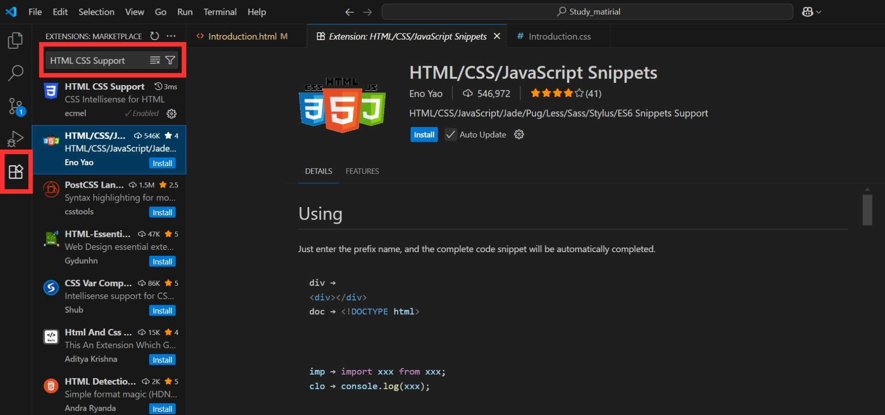🔥 HTML CSS Support
Це розширення значно полегшує верстку, пропонуючи підказки та допомагаючи уникнути помилок:
🔹 У панелі пошуку введи html css support.
🔹 Клікни на потрібне розширення зі списку.
🔹 Натисни Install.
Після установки розширення воно буде активно у всіх твоїх проєктах. Це розширення пропонує підказки при введенні класів і атрибутів, що пришвидшує роботу і запобігає помилкам.

🛠 Path Intellisense
Це розширення допомагає автоматично підказувати шляхи до файлів у твоєму проєкті, економлячи час і знижуючи ймовірність помилок, коли ти працюєш із файлами.
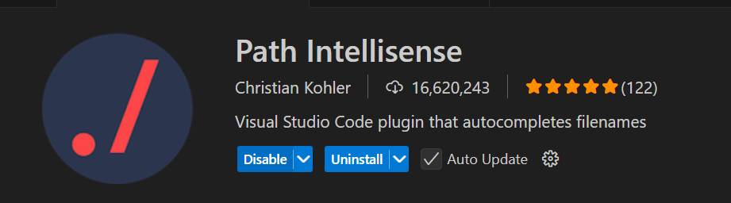🎨 Prettier для автоматичного форматування
Для підтримки чистоти та єдиного стилю коду, скористайся розширенням Prettier. Воно дозволяє автоматично форматувати код при кожному збереженні файлів:

Щоб увімкнути автоматичне форматування, натисни на іконку Prettier у рядку стану.
Налаштування правил форматування
Для налаштування правил форматування створюй у корені проєкту файл .prettierrc.json і додай у нього такі налаштування:
{
"printWidth": 80,
"tabWidth": 2,
"useTabs": false,
"semi": true,
"singleQuote": true,
"trailingComma": "es5",
"bracketSpacing": true,
"jsxBracketSameLine": false,
"arrowParens": "avoid",
"proseWrap": "always"
}
Збережи зміни, і тепер твій код буде автоматично форматуватися при кожному збереженні.
🔍 Formatting Toggle
Це розширення дозволяє швидко вмикати та вимикати форматування коду за допомогою команди Format Document або гарячих клавіш.
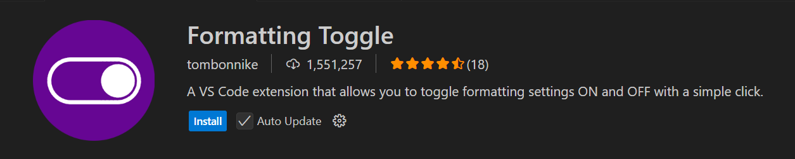🔒 Auto Close Tag
Коли працюєш з парними тегами в HTML, часто можна забути про закриваючий тег. Це розширення автоматично додає закриваючий тег при введенні відкриваючого.
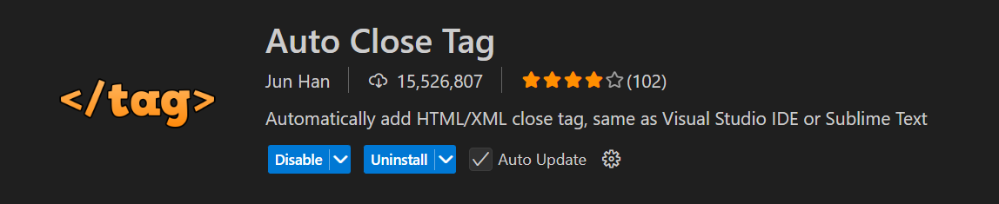🔄 Auto Rename Tag
Це розширення допоможе автоматично змінювати відповідні парні теги при редагуванні одного з них.
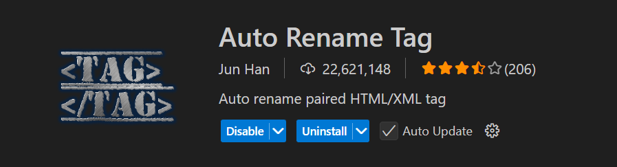✨ Highlight Matching Tag
Це розширення підсвічує відповідні відкриваючі та закриваючі теги, допомагаючи швидше орієнтуватися у коді. Після цього теги, що відкривають і закривають, будуть підсвічуватись, і ти побачиш шлях до тегу у рядку стану.
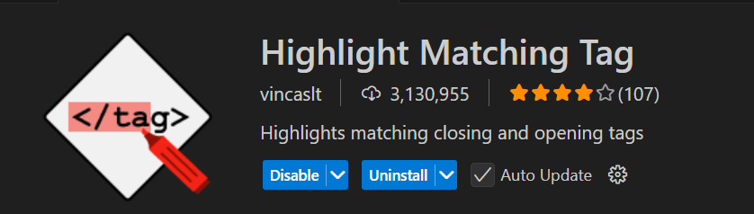🎨 Colorize
Розширення Colorize дозволяє візуалізувати кольори CSS, що полегшує роботу з кольоровими значеннями. Це розширення миттєво візуалізує кольори, використовуючи відповідний фон для кожного кольору у твоєму CSS.
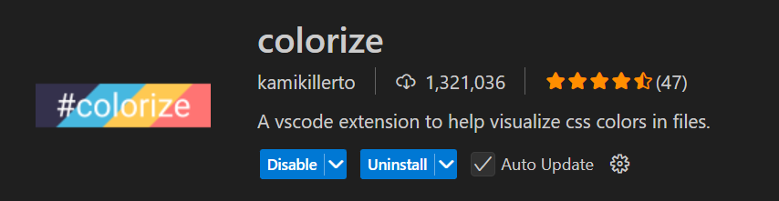🐞 Gremlins Tracker
Розширення Gremlins Tracker дозволяє знаходити потенційно проблемні символи у коді, такі як невидимі або схожі на вигляд символи:
🚀 Live Server
Розширення Live Server дозволяє запустити локальний веб-сервер, щоб бачити зміни на сайті в реальному часі.
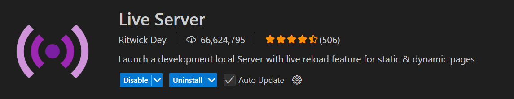Після встановлення відкрий файл index.html у проєкті, і ти побачиш іконку Go Live у рядку стану. Клікни на неї, щоб запустити веб-сервер. Для зупинки натисни на іконку Port: …, і вона знову стане Go Live.
Увага: Не забудь зупинити сервер перед закриттям редактора, щоб уникнути зайнятих портів.
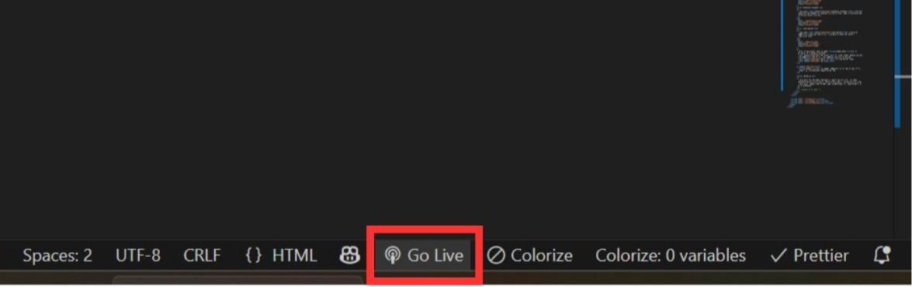🎉 Підсумок
Розширення для VS Code допомагають значно прискорити розробку, уникнути помилок і зробити роботу комфортнішою. Встановлюй корисні розширення, налаштовуй їх під себе та підвищуй свою ефективність у програмуванні!
Перевір свої знання про плагіни у VS Code!
1. Як додати розширення в VS Code?
2. Що робить розширення "Prettier" у VS Code?
3. Яка функція розширення "Live Server" у VS Code?
👋 Знайомтесь, це Git!
Маєш великий проєкт, і кілька файлів з назвами на кшталт "Звіт", "Звіт фінальний" та "Звіт фінальний 1"? Чи не загубив ти щось після «Звіт фінальний 5 погоджений»? І не зовсім зрозуміло, коли ж буде остаточний варіант?
Якщо це знайомо, то ти не один. З таким стикаються навіть розробники програмного забезпечення, а коли працюють у команді, ситуація ускладнюється. Уяви, що 20-30 людей одночасно вносять зміни в один проєкт. І як тут усе відстежити? Це справжня хаос!
Тому й було створено Git — систему, яка допомагає контролювати версії файлів і робити процес розробки зрозумілим та організованим.
🔧 Як це працює?
Уяви, що ти проходиш відеогру, і кожного разу перед важким моментом зберігаєш прогрес (Save-1, Save-2, Save-3). Кожне збереження — це певний етап гри, і ти завжди можеш повернутися до будь-якої збереженої версії, якщо потрібно.
Ось як працює Git: у тебе є різні версії проєкту, кожна з яких зберігається як коміт. Ці версії можна зберігати в спеціальному сховищі — репозиторії. Ти можеш повернутися до будь-якої з них, якщо хочеш перевірити, як виглядав твій проєкт раніше.
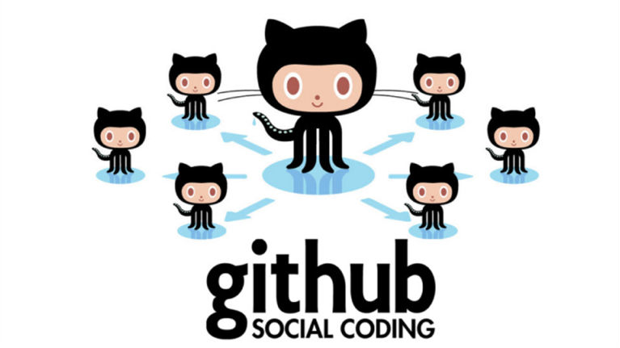📜 Як працює коміт?
Коміт — це моментальне збереження всього поточного стану твого проєкту.
Кожен коміт має унікальний ідентифікатор (номер версії), що дозволяє легко знаходити й відновлювати будь-який етап роботи.
Перед тим як зберегти зміни, ти додаєш опис, що саме було змінено — це дозволяє згодом легко зрозуміти, що відбувалося на кожному етапі проєкту.
Так ти можеш бачити всі зміни в історії проєкту і завжди повернутися до попереднього стану, якщо потрібно.

📚 Git і GitHub — в чому різниця?
Git — це система, що працює на твоєму комп'ютері і дозволяє локально зберігати та відслідковувати версії твоїх проєктів.
GitHub — це хмарний сервіс, що використовує Git для зберігання репозиторіїв в Інтернеті. Це дозволяє тобі працювати з проєктами з будь-якого комп'ютера і ділитися ними з іншими людьми. Кожен може внести свої зміни та зберігати код у спільному репозиторії.
🔹 Git — Програма для локального контролю версій | GitHub — Сервіс для зберігання репозиторіїв у хмарі
🔹 Працює на твоєму комп'ютері | Працює в Інтернеті, доступний з будь-якого комп'ютера
🔹 Відстежує зміни локально | Дозволяє працювати з віддаленими репозиторіями, зберігати код та спільно працювати
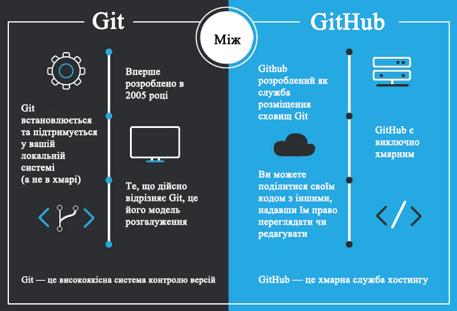 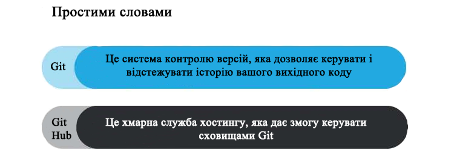⚡ Чому це важливо?
Домашні завдання під час курсу — це твої персональні проєкти. Для кожного завдання потрібно створювати репозиторії та додавати коміти, щоб фіксувати всі зміни. Це дозволить тобі мати чітке уявлення про всі етапи роботи та зробить твій процес розробки більш організованим.
Рекомендуємо зареєструватися на GitHub прямо зараз, щоб налаштувати локальні та віддалені репозиторії для своїх проєктів. Це дасть можливість зберігати зміни та працювати над завданнями без зайвих турбот.
📌 Що потрібно пам'ятати:
На першому етапі ми зосередимося на індивідуальних завданнях, тому наразі не розглядаємо всі можливості GitHub для командної роботи (forks, pull requests, branches). Ці інструменти ми вивчимо перед командними проєктами.
Налаштування Git до початку курсу заощадить час і допоможе уникнути стресу. Тому давай не зволікати і налаштуємо все зараз!
Перевір свої знання про Git та GitHub!
1. Що таке Git?
2. Що таке коміт у Git?
3. Яка основна різниця між Git і GitHub?
🔧 Встановлення Git та реєстрація на GitHub
Крок 1: Інсталяція Git
Першим кроком до успішної роботи з кодом є встановлення Git — системи контролю версій, що дозволяє зберігати та відслідковувати зміни у твоєму коді. З Git ти зможеш ефективно працювати з іншими програмістами, ділитися своїми розробками і тримати все під контролем. Крім того, Git потрібен для коректної роботи з GitHub — популярним сервісом для зберігання кодів.
Щоб встановити Git, просто перейдіть за цим посиланням, обери свою операційну систему (Windows, macOS, Linux) і натисни Download.
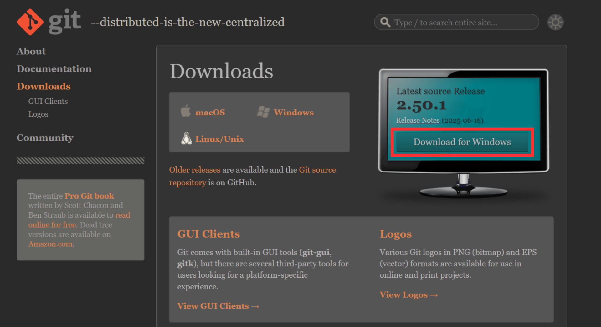Коли завантаження закінчиться, клікни лівою кнопкою миші на завантажений файл; зачекай, коли з’явиться повідомлення про інсталяцію та натисни Finish.
Крок 2: Реєстрація на GitHub
GitHub — це не лише сховище коду, а й соціальна платформа для програмістів. Зареєструвавшись, ти зможеш ділитися своїми проєктами, співпрацювати з іншими розробниками та навіть отримувати пропозиції від роботодавців, які шукають таланти. Ось як зареєструватися:
🔹 Перейди на сайт GitHub.
🔹 Натисни Sign up і введи свою електронну адресу. Зроби це на актуальну адресу, оскільки на неї прийде важливий лист.
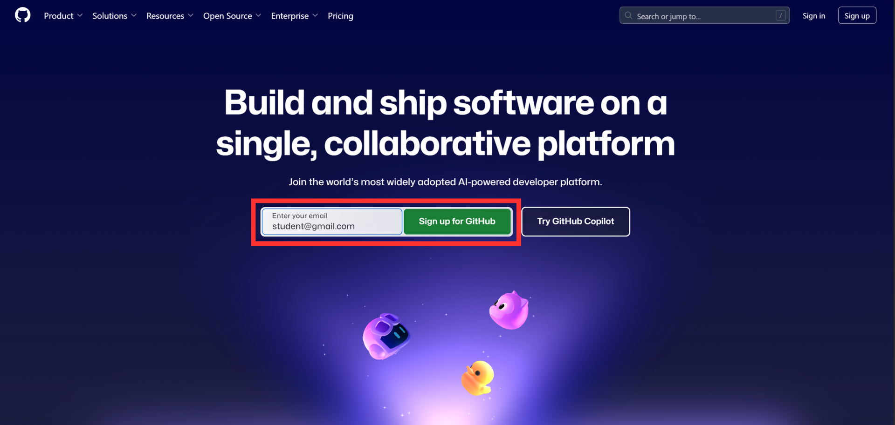🔹 Введи надійний пароль — мінімум 15 символів, або хоча б 8 символів, що містять числа й малі літери. Це важливо для безпеки твоїх акаунтів.
🔹 Обери ім’я користувача — це буде твій псевдонім на GitHub. Якщо вибране ім’я вже зайняте, можна додати цифру або придумати унікальне.
🔹 Натисни Continue для завершення реєстрації.
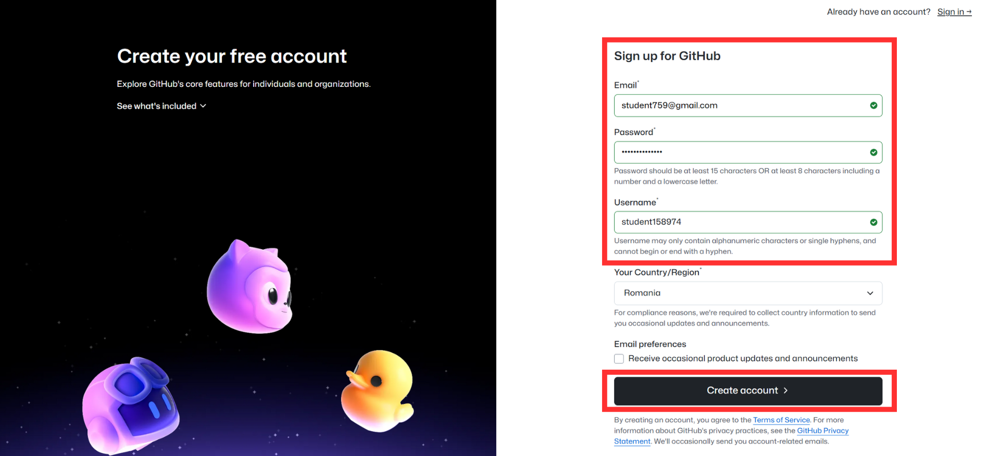Крок 3: Підтвердження поштової адреси
Тепер потрібно підтвердити свою пошту:
🔹 Перевір свою пошту, відкрий лист від GitHub і скопіюй наданий числовий код.
🔹 Встав цей код у форму підтвердження на сайті GitHub.
🎉 Вітаємо! Тепер у тебе є профіль на GitHub і Git встановлено на комп'ютері. Це основні інструменти, з якими ми будемо працювати в наступних етапах курсу.
📂 Як створити репозиторій на GitHub
Крок 1: Створення репозиторію
Щоб почати працювати з GitHub, створимо репозиторій для твого проєкту. Репозиторій — це своєрідний "контейнер", де зберігається весь код і файли проєкту.
🔹 У лівому меню натисни кнопку Create repository.
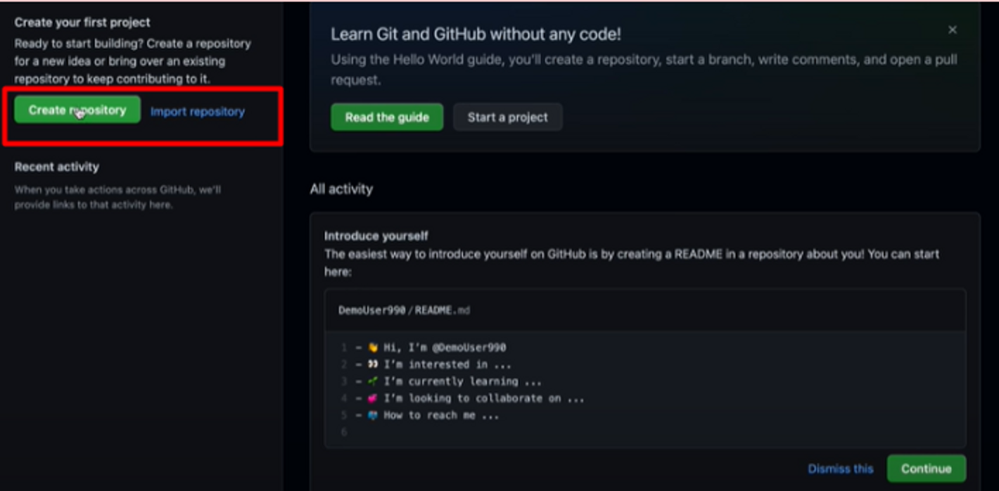Введи назву репозиторію в полі Repository name. Зазвичай, назва репозиторію має бути:
- Написана англійськими буквами;
- Без пробілів, якщо потрібно — використовуйте дефіс для розділення слів;
- Вказуй назву проєкту, до якого належить репозиторій.
Крок 2: Налаштування репозиторію
🔹 Вибери тип репозиторію — Public. Це дозволить іншим бачити твій код і співпрацювати з тобою.
Увага: Починай з публічних репозиторіїв, особливо для домашніх завдань. Так викладач зможе переглядати твій код і залишати коментарі.
.gitignore — це спеціальний файл, який дозволяє вказати Git, які файли і папки слід ігнорувати. Наприклад, конфігурації редактора, паролі чи тимчасові файли. Якщо не хочеш вручну вказувати всі ці файли, можна використати стандартний шаблон .gitignore для Node.js або інших технологій.
🔹 Для цього натисни Add .gitignore, введи назву node і вибери відповідний шаблон.
Простав галочку для додавання файлу README. Це важливо, оскільки він містить опис проєкту, який зручно переглядати прямо на головній сторінці репозиторію.
Крок 3: Завершення створення репозиторію
Натисни кнопку Create repository, і твій новий репозиторій буде готовий до використання.
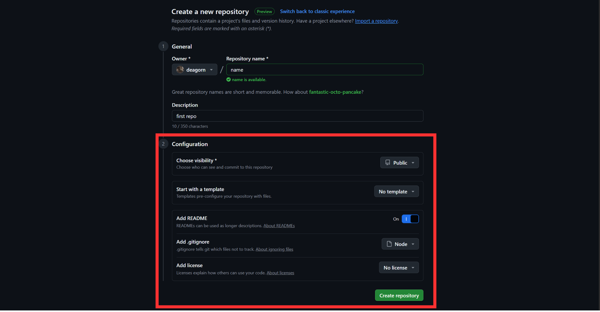Крок 4: Перевірка репозиторію
Після створення репозиторію, ти побачиш кілька вкладок:
🔹 Зелене поле — загальна інформація про проєкт.
🔹 Синє поле — файли, що зберігаються в репозиторії (спочатку лише файл README, але скоро з'являться інші).
🔹 Жовте поле — вміст файлу README, який можна редагувати для додавання опису проєкту.
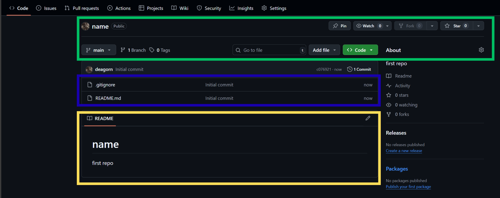🎉 Вітаю, ти створив свій перший репозиторій на GitHub!
💻 Встановлення та синхронізація GitHub Desktop
Крок 1: Встановлення GitHub Desktop
Щоб зручно працювати з репозиторіями, нам потрібна програма GitHub Desktop. Вона дозволить керувати репозиторіями на твоєму комп'ютері без необхідності використовувати командний рядок.
🔹 Перейди за посиланням і натисни Download.
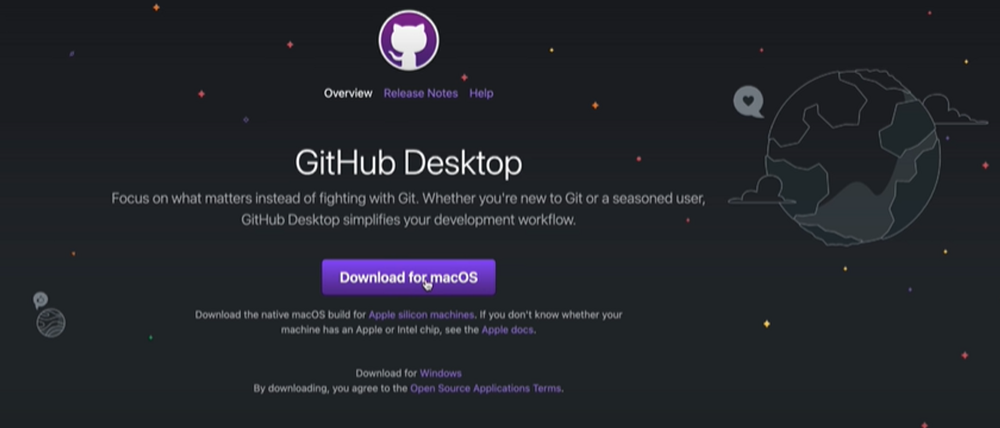🔹 Після завантаження клікни два рази на файл, щоб розпочати установку.
🔹 Зачекай, поки програма встановиться, і перевір наявність ярлика GitHub Desktop на робочому столі.
Крок 2: Синхронізація GitHub Desktop із профілем на GitHub
Тепер давай підключимо GitHub Desktop до твого профілю на GitHub:
🔹 Відкрий GitHub Desktop і натисни кнопку Clone a Repository from the internet.
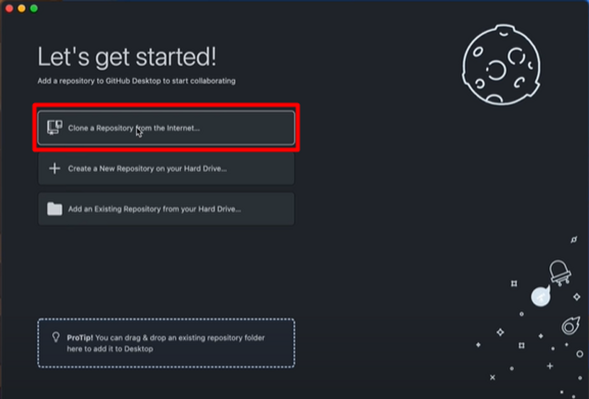🔹 Для входу натисни Sign in і вибери Continue with browser.
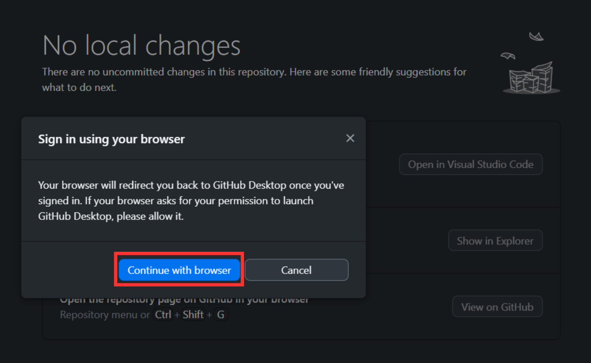Переконайся, що в браузері відкрито твій GitHub профіль.
🔹 Після входу натисни Authorize desktop і потім Open GitHub Desktop.
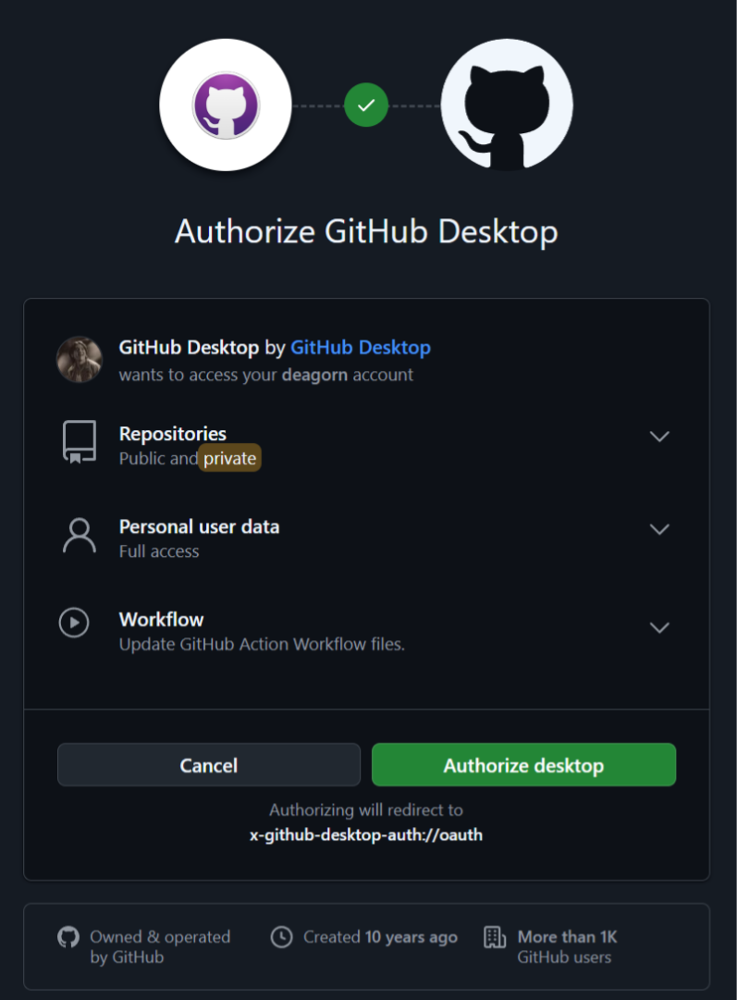Тепер твій профіль на GitHub синхронізовано з GitHub Desktop. Репозиторій, який ти створив на сайті GitHub, з'явиться на екрані.
Крок 3: Клонування репозиторію з GitHub на комп'ютер
🔹 Щоб скопіювати репозиторій з GitHub на комп'ютер, натисни Clone a repository from the internet.
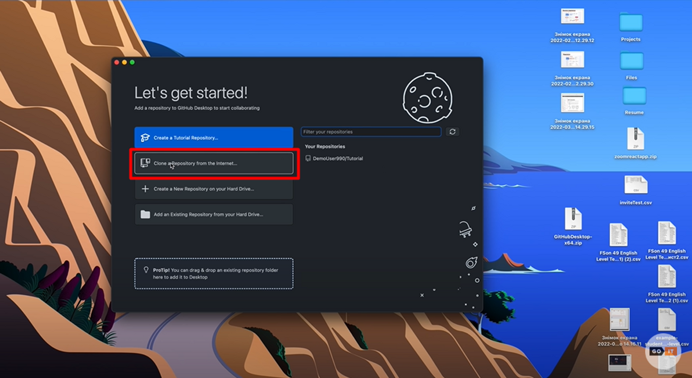🔹 Обери репозиторій з твоїх синхронізованих проєктів і натисни Clone.
🔹 При першому клону побачиш запит на вибір папки. Натисни Choose і вкажи місце на комп'ютері для збереження проєктів.
🔹 Після цього натисни Clone і зачекай, поки процес завершиться.
Тепер твій репозиторій доступний на комп'ютері!
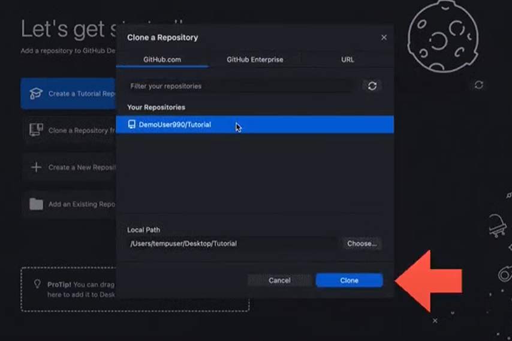Крок 4: Синхронізація GitHub з редактором VS Code
🔹 В GitHub Desktop натисни Open in Visual Studio Code, щоб відкрити проєкт у редакторі.
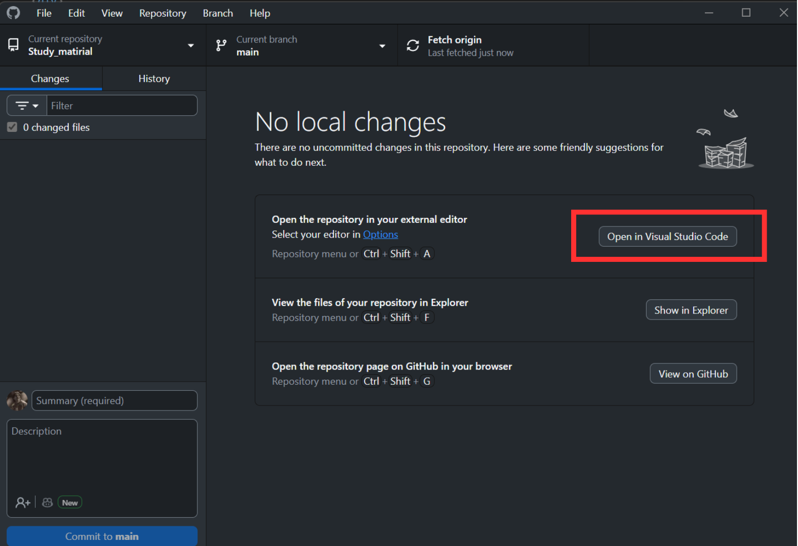🔹 Створи новий файл index.html і додай стандартну розмітку. Ось код для початку:
<!DOCTYPE html>
<html lang="en">
<head>
<meta charset="UTF-8">
<meta name="viewport" content="width=device-width, initial-scale=1.0">
<title>My First Project</title>
</head>
<body>
<h1>Welcome to My First Project</h1>
<p>This is an introductory project!</p>
</body>
</html>
Крок 5: Додавання коміту до локального репозиторію
🔹 Після того як ти внесеш зміни у файли проєкту, відкрий GitHub Desktop.
🔹 Ліворуч ти побачиш список файлів, які змінилися (наприклад, index.html). Праворуч відобразиться код, який був змінений.
🔹 Клікни на поле введення і дай коміту ім'я, наприклад: Create index.html.
🔹 Опис коміту (не обов'язково) дозволяє детальніше пояснити, що було змінено.
Порада: роби коміт після завершення кожної окремої частини роботи. Наприклад, після того, як завершив частину верстки або додав нову функціональність.
🔹 Коли опис готовий, натисни Commit to main, щоб зафіксувати зміни.
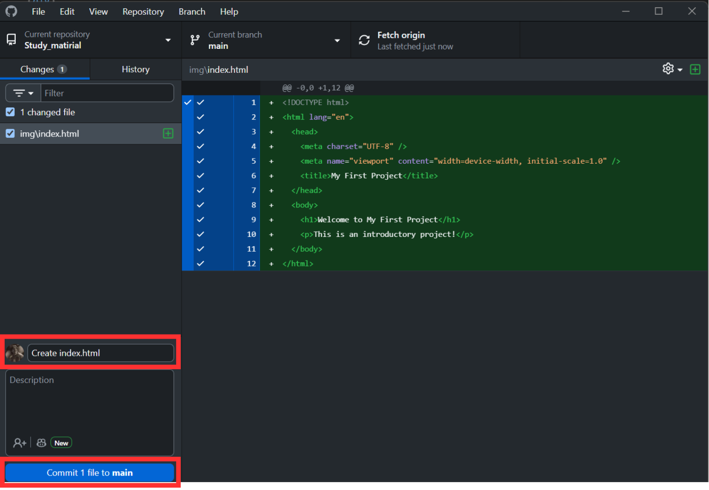Крок 6: Публікація змін на GitHub
Щоб опублікувати зміни, натисни Push origin у вкладці Changes.
Зачекай, поки зміни будуть надіслані на GitHub.
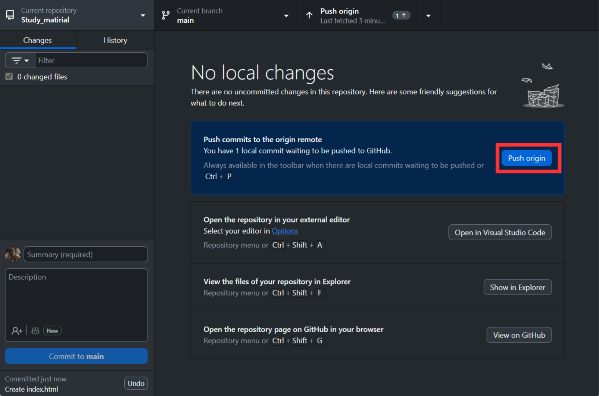Перевір свій репозиторій на сайті GitHub — там з'явиться файл index.html.
Підсумок
🎉 Ти успішно зробив коміт у локальний репозиторій і публікував зміни на GitHub. Це стандартна практика, яку використовують програмісти для контролю версій своїх проєктів!